Random stuff I've done but never continued
- Sports
- Violin
- Singing
- MUN's
- Coffee
- DIY home improvement projects that didn't get past Pinterest phase
- My Grade 11 crush
Things I want to do more
- Eat
- Finish my anime watchlist
- Complete some crochet projects
- Naps that turn into full sleep cycles
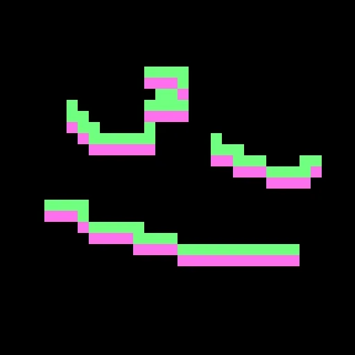
Something I'm never going to do
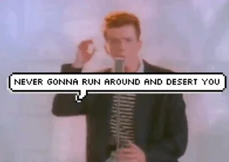My Hobbies and Skills
I doubt I have interesting hobbies but I Crochet, Read books and manga, Watch anime, and participate in Hackathons.
I'm also a SPY
Crochet
I've been crocheting since 4th grade. But all of a sudden I can't find everything I've done. I did give some out though. Some of my crochet projects include bags, purses, scarves, slippers, a shrug, and a lot of unfinished projects with scraps of wool everywhere.
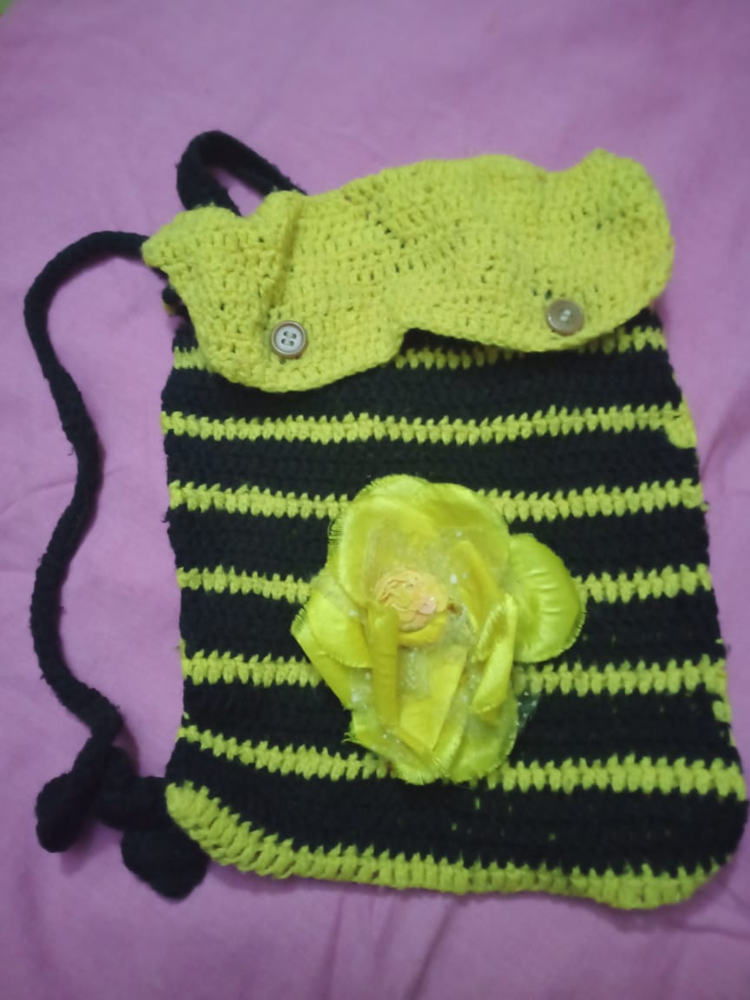
 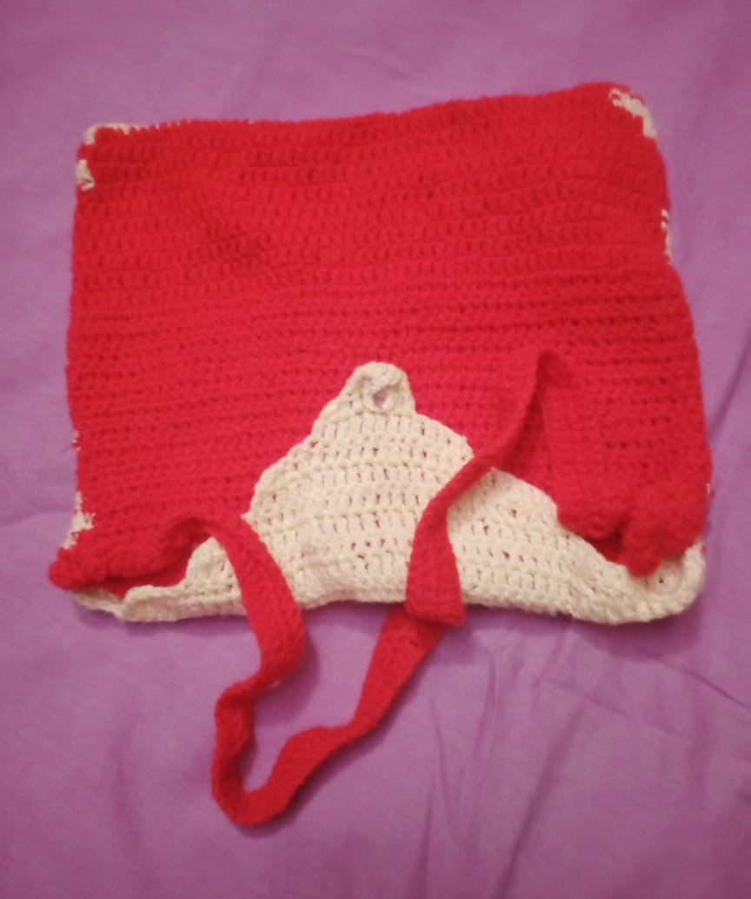
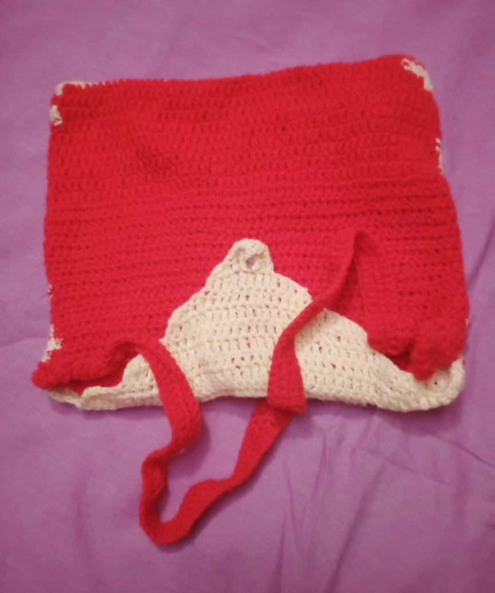
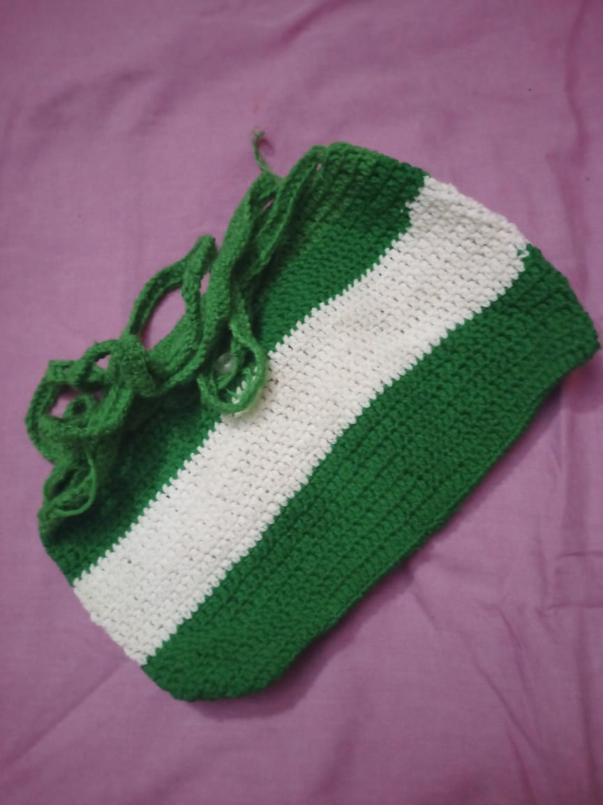
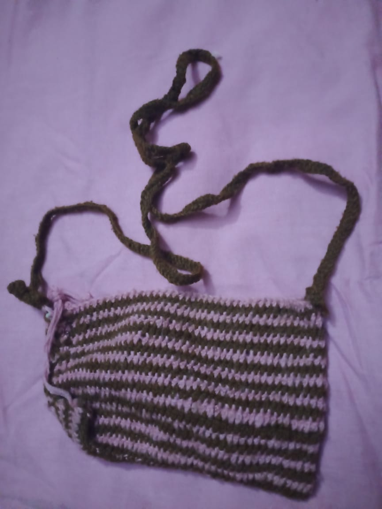
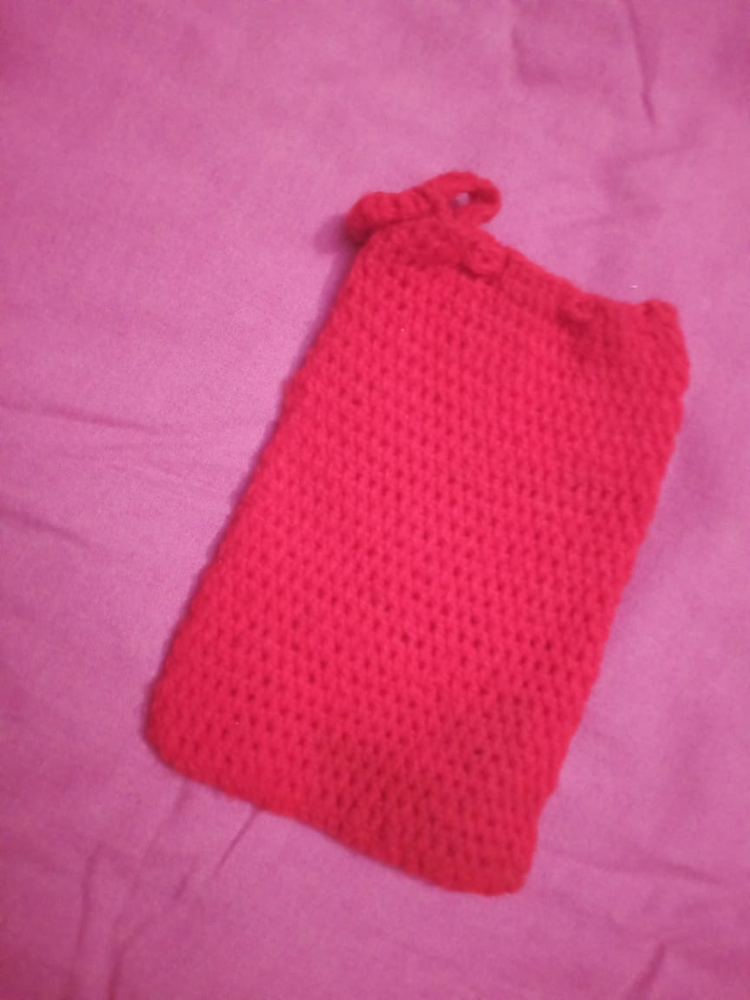
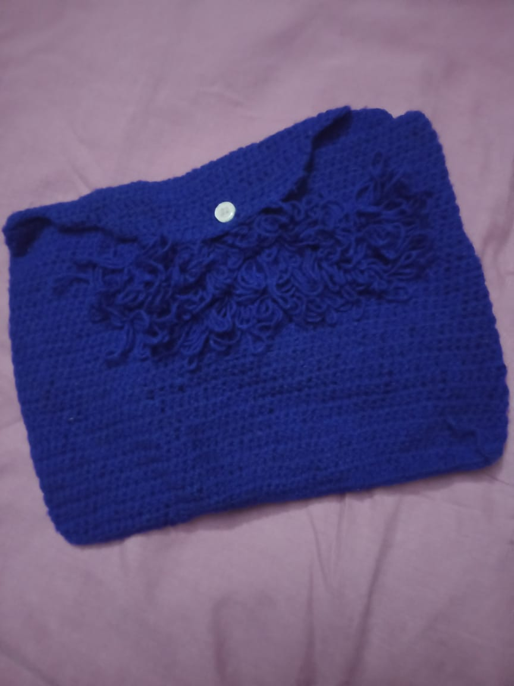
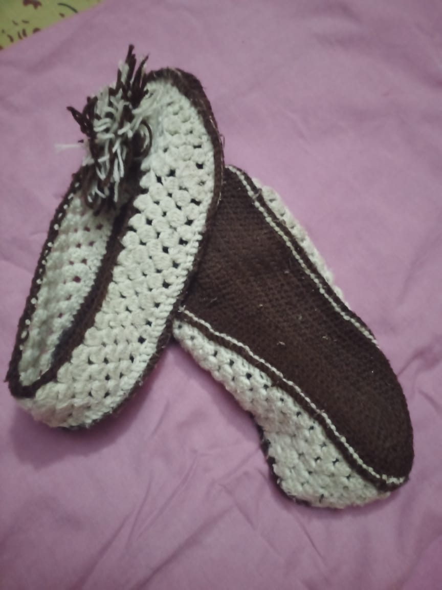
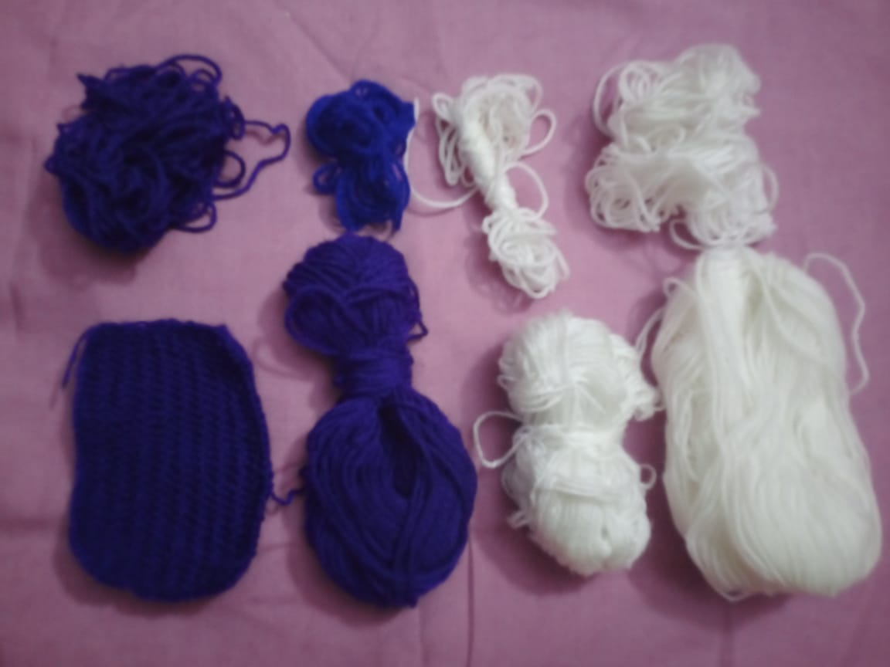
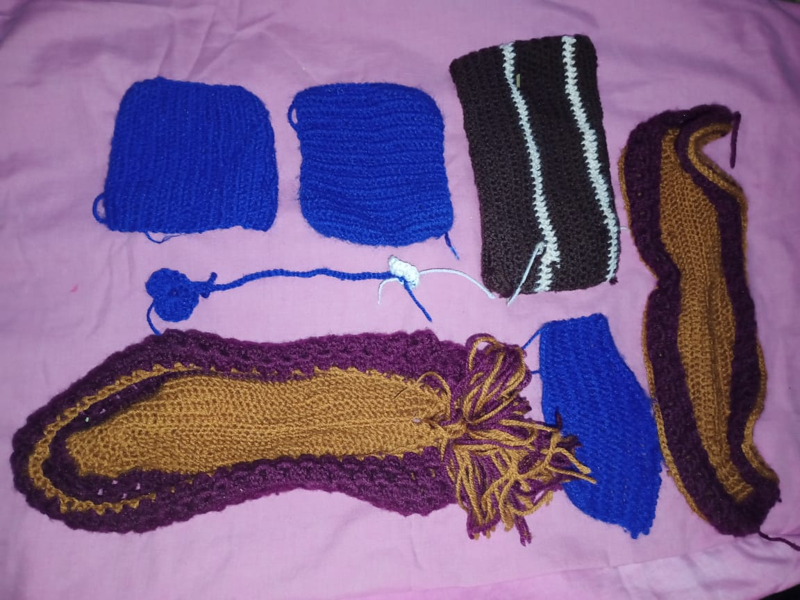
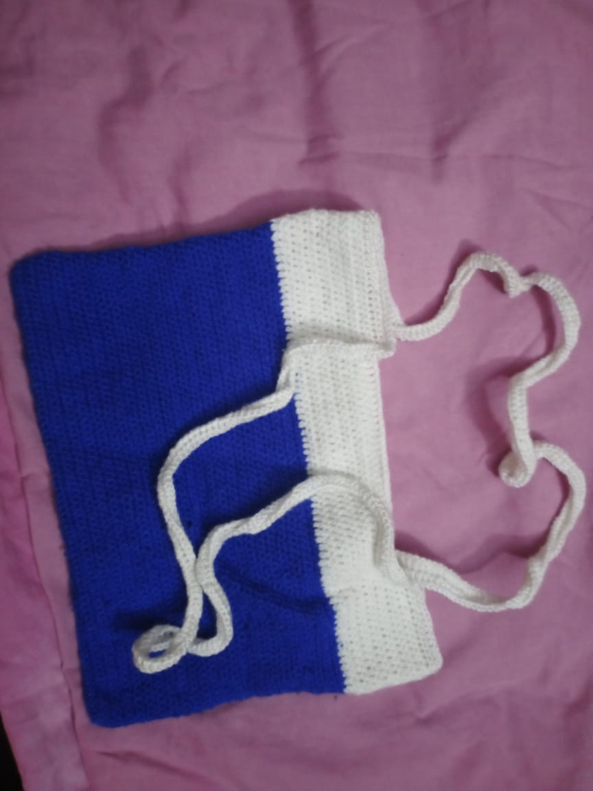
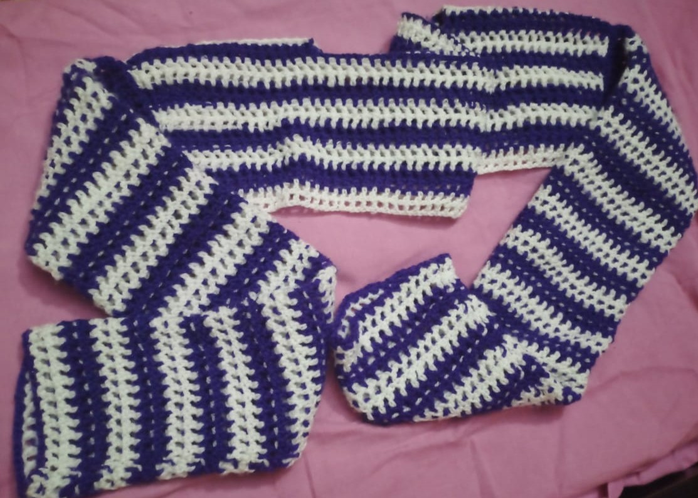
Reading
Who knows what I read? Well, light novels and e-books mainly. But I usually don't have enough time and not enough options. You can give me some recs, please.
I've studied some physics textbooks before. +1 point for me. I'm a reader.
Anime/Manga
Haha. Favorite anime? hmmmmm dunno but I recommend watching Attack on Titan. A pure comedy anime🤡🤡. Every time I watched a sports anime, it always motivated me to begin the sports. Eg. Kuroko's Basketball, Frame Lock I mean Blue Lock😁, and I have not yet watched Haikyu.
Well other ones I've watched: Jujutsu Kaisen, KNY, MHA, Tokyo Revengers, Tokyo Ghoul(It fell off soo bad. I stopped watching at season 3), Bungo Stray Dogs, Seven Deadly Sins, Solo Leveling, The Apothecary Diaries, Spy x Family, Kakeguri, Eden Zero, Komi can't communicate, Wind Breaker, Chainsaw Man, Hell's Paradise, Assasination Classroom, Kaiju No 8, FireForce, Saiki K chefs kiss💋💋, my first anime, and some more that I can't remember right now.
Also go watch Voltron even though Netflix decided to remove it😁. Removing the good shows.
For Manga, The beginning after the end👌💯. But as I said, I can't remeMber everything right now.
 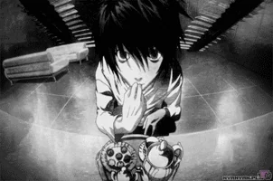
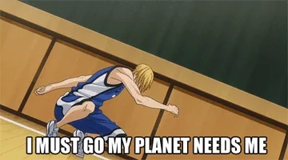
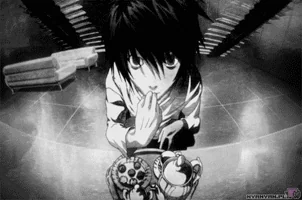
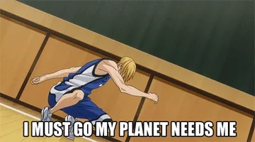
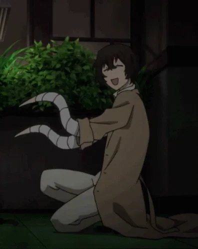
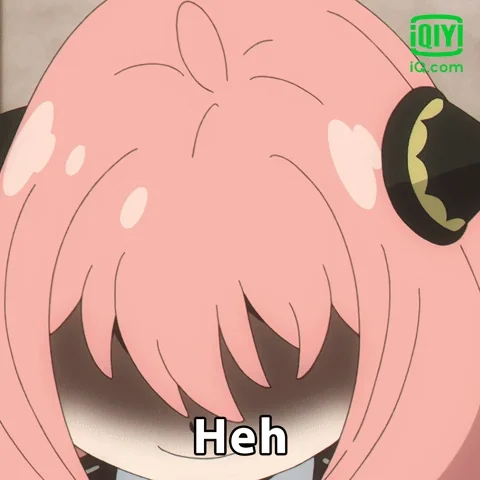
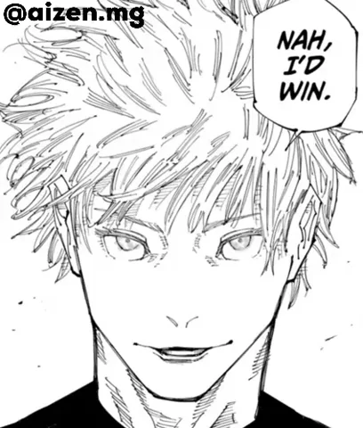
Hackathons and Coding
I kept this last cuz I am still building myself

Anyway I've been to some hackathons like
- HackThisFall
- Brainrot hackathon🤪
- and this hackathon: Codedex Holiday Hackathon❄⛄.
I also have some coding skills like:
- HTML
- CSS
- REACT.JS
- PYTHON: Matplotlib, Pandas, Numpy
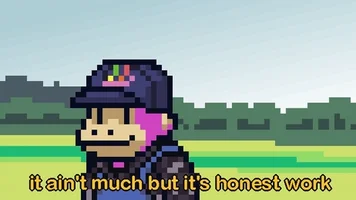